、
、 、
、 是群中的任意元素，×是合成法则，那么总有
是群中的任意元素，×是合成法则，那么总有 我们不得不承认，数学是一门枯燥的学问，缺乏魅力和浪漫。因此，数学史学家大肆渲染伽罗瓦的故事，为其赋予了更多的传奇色彩。
他的故事也许被渲染得有点儿过头了。从某种程度上讲，伽罗瓦的故事中有很多虚构、错误、推测，甚至街谈巷议的成分。在用英文写成的故事中，关于伽罗瓦最著名的故事是贝尔的杰作《数学大师》中的一章“天才与愚蠢”。在这一章里，贝尔讲述了一群蠢人迫害一位充满激情的理想主义天才的故事，这位天才在令人绝望的生命中的最后一个夜晚将现代群论的基础写在纸上。贝尔的故事在细节上肯定是虚构的，对伽罗瓦性格的刻画可能也是错的。尽管汤姆·佩茨尼斯（1953— ）1997 年的小说《法国数学家》的写作风格不太合我的口味，而且其结尾太荒谬，但是它却更接近伽罗瓦的故事的真相。我建议大家最好抽一点儿时间浏览宇宙学家、数学史爱好者托尼·罗思曼（1953— ）的网站，他非常客观地评价了所有的资料。
伽罗瓦在 20 岁零 7 个月时死于一场决斗。这场手枪决斗发生在黎明时分。伽罗瓦显然确信自己会被杀死，甚至他可能希望如此，在决斗的前一天晚上，他熬夜写了绝笔信。其中一些信是写给政见相同的朋友的——和他一样反对君主主义的共和主义者。其中有一封写给他的朋友奥古斯特·舍瓦利耶的信，信中包含了对他的数学著作的注解。
这场决斗的原因不详，既可能是政治原因，也可能是感情原因，或二者兼有。伽罗瓦在其中一封信中写道：“两名爱国者已经向我提出挑战……”然而在另一封信中，他又说：“我死在了一个无耻的、卖弄风情的女子手里……”在 1832 年巴黎起义前后（雨果在《悲惨世界》中描绘了这场起义），极端共和主义者在巴黎壮大起来，伽罗瓦卷入了政治斗争之中。伽罗瓦还遭受着单相思的痛苦。
毫无疑问，伽罗瓦的人生是浪漫的。若你仔细看看他所处的环境，正如常见的那样，浪漫的背后往往是某种痛苦和不堪。伽罗瓦的人生的确充满了悲剧色彩，他自己古怪的性格在很大程度上决定了他的不幸，这一点也加剧了其人生的悲情成分。
※※※
1830 年的法国不是一片乐土。拿破仑战败之后，波旁王朝在同盟国的帮助下得以复辟，国王查理十世年事已高，而且极端保守。社会状况每况愈下，快速的城市化和工业化正在把巴黎的大部分地区变成可怕的贫民窟，成千上万的人生活在水深火热之中。这就是巴尔扎克和雨果笔下的巴黎，一个充满野心、唯利是图的资产阶级和愤怒的底层阶级共存的城市。社会底层人民的生计取决于不可控制的经济周期，他们的苦难只有通过偶尔的慈善才能略微减轻。
1830 年，法国经济不景气，面包价格飙升，大约 60 000 名巴黎人没有工作。7 月，巴黎设置了路障，暴徒控制了城市，查理十世被迫逃离法国。波旁家族的远亲奥尔良公爵路易·菲利普被进步的资产阶级议员推选为新的国王——“七月君主”。路易·菲利普为人和蔼谦逊，是一个富裕的自由主义者。然而，当时的法国政坛日趋激进，纯粹的自由主义无法满足他们的政治需要。19 世纪 30 年代，法国不时爆发起义，其中最重要的一次起义发生在 1831 年的巴黎。在那个局势紧张的年代，持有强烈观点、头脑发热的年轻人很可能会发现自己受到警察的监视，或许还会短暂地被捕入狱。
※※※
1811 年 10 月，伽罗瓦出生于巴黎南部的小镇拉雷讷堡，这个小镇位于今天通向奥尔良的巴黎市郊。伽罗瓦的父亲是一名自由主义者、反教权主义者和反保皇主义者。1815 年，在拿破仑当皇帝的最后时日、滑铁卢战役失败后的“百日王朝”期间，伽罗瓦的父亲当选为这个小镇的镇长。君主制复辟后，老伽罗瓦宣誓效忠于波旁王朝——他并不是改变了主意，而是为了阻止真正的保皇派取代他的位置。
我们所知的有关伽罗瓦个性的评价首先来自他在巴黎求学时的老师们。他们对这个年轻人的评价是很聪明但比较内向，工作没有条理，而且不愿意听取别人的劝告。罗思曼写道：“‘奇异’‘奇怪’‘古怪’‘孤僻’等词语频频出现在伽罗瓦在路易大帝中学的生活中。连他的家人都开始认为他很奇怪。”然而，罗思曼又说伽罗瓦的老师们的观点并不一致，他的学生时代绝不像贝尔描述的那样，遭受着噩梦般的、难以理解的迫害。
1829 年 7 月，伽罗瓦还不到 18 岁，他的父亲在距伽罗瓦的学校不远的一所公寓内自杀身亡。此前，伽罗瓦的父亲一直忍受着当地一个恶毒的牧师的诽谤。这件事令伽罗瓦悲痛不已。仅仅几天之后，他参加了享有盛誉的巴黎综合理工大学的入学考试的口试，当时拉格朗日、拉普拉斯、傅里叶和柯西任教于此。因为他不够圆滑，也可能因为他故意显示出傲慢自大，伽罗瓦没有通过考试。当时，考官要求他证明某个数学断言，他回答说这个断言应该是很显然的。几个月后，也就是 1830 年初，伽罗瓦 18 岁半，他被一所当时没什么名望的预备学校录取了，实际上它是一所教师培训学院（今天称作巴黎高等师范学院）。
伽罗瓦关于方程解的理论的第一个版本，也就是贝尔提到的伽罗瓦在临死前一天晚上疯狂写下的那篇论文，实际上在他的父亲自杀的几个星期前就已经提交到法国科学院。柯西被指定审核这篇论文。贝尔认为柯西弄丢或者忽略了这篇论文（坦白地说，所有人都这样认为，直到人们后来在法国科学院档案中发现了为柯西辩护的证据）。恰恰相反，这位大数学家似乎对这篇论文评价很高，他建议伽罗瓦再仔细润色一下，再为这篇论文申报法国科学院数学大奖。总之，不管伽罗瓦是否听从了柯西的建议，他确实这样做了。他于 1830 年 2 月把这篇论文重新提交给傅里叶——当时法国科学院的秘书。唉，很遗憾，傅里叶在同年 5 月 16 日去世了。
或许柯西能把伽罗瓦从默默无闻中拯救出来，然而，当时正值革命年代，路易·菲利普的新自由主义政权让柯西难以忍受。在任何情况下，柯西都是一个有原则的人，他已经宣誓效忠于查理十世，他认为不能再向路易·菲利普做出同样的誓言。柯西本可以辞职，退隐到某个私人的地方职位上（当时他 40 岁），但最后他却自愿流放，离开法国长达八年之久。只有弗赖登塔尔提及的“不切实际的举止”能解释柯西的自愿流放，除此之外没有其他很好的解释了（见第 7 章）。
伽罗瓦本人并没有参加七月革命。预备学校的校长了解到学生团体中有大量激进分子之后，把学生们锁在学校里，不让他们上街抗议。然而，伽罗瓦却充分自由地发表了自己的激进观点，以至于他被学院开除了。
从 1831 年 1 月初开始，伽罗瓦人生的最后 17 个月的经历如下。
1831 年 1 月 4 日，伽罗瓦从预备学校（巴黎高等师范学院）退学。在接下来的 4 个月里，伽罗瓦似乎一直试图通过在巴黎当私人数学教师来谋生，同时与其他拥护共和主义的年轻激进分子一起到处游荡。
1 月 17 日，伽罗瓦向法国科学院提交关于方程解的论文的第三版。西莫恩·德尼·泊松（1781—1840）被指定为审稿人。
5 月 9 日，伽罗瓦参加了一个共和主义者的宴会。在宴会上敬酒时，他似乎说了威胁路易·菲利普性命的话。第二天伽罗瓦被捕。
6 月 15 日，伽罗瓦接受审问，但被无罪释放，可能是因为他年轻。
7 月 14 日（法国大革命纪念日），伽罗瓦再次被捕，一同被捕的还有他的朋友埃内斯特·迪沙特莱，被捕原因是他们穿了被禁止的炮兵制服。很显然，携带武器也是他们被捕的原因。据报道，伽罗瓦带了一把上膛的步枪、“几把手枪”和一把匕首。
（伽罗瓦从 1831 年 7 月 14 日一直被关押到 1832 年 4 月 29 日。不过，监狱里的条件似乎不是很苛刻。比如，犯人们经常酗酒。）
10 月，伽罗瓦收到法国科学院泊松的拒稿信。泊松觉得伽罗瓦的文章太难理解，但是并没有指责他，而是建议他改进陈述方式。
1832 年 3 月 16 日，由于霍乱在巴黎肆虐，伽罗瓦与其他犯人一道从监狱被转移到一所疗养院。这所疗养院其实是一座“开放的监狱”，伽罗瓦有相当大的来去自由。在那里，他爱上了斯蒂芬妮·迪莫泰，她是这所疗养院中一位住院医生的女儿。但是，他的求爱没有得到回应。
4 月 29 日，伽罗瓦被释放。
5 月 14 日，伽罗瓦似乎收到了斯蒂芬妮的拒绝信。
5 月 25 日，伽罗瓦给他的朋友奥古斯特·舍瓦利耶写了一封信，告诉他自己失恋了。
5 月 30 日，致命决斗。
这场决斗的确切情况以及伽罗瓦生命中最后几天的真实状况是一个谜，可能永远都不会为人所知。从某种意义上说，伽罗瓦可能已经放弃了自己的生命。他的父亲的死、他的论文遭到拒绝（前一次投稿也遭到忽视）、他对斯蒂芬妮的单相思、渺茫的就业前景、几个月的牢狱之灾以及巴黎瘟疫肆虐的惨状，这一切对他来说都太沉重了。
6 月 4 日，法国里昂的一家报纸刊登了一篇关于这场决斗的简要报道，让这场决斗看起来像是两个老朋友为了得到某个女人的爱而展开的竞争，他们采用一种俄罗斯轮盘赌的方式来决定胜负。“对手挑选手枪作为武器，但是因为他们是老朋友，所以彼此不忍心看着对方……”报道中只说伽罗瓦的对手是 L. D. ，某个女人很可能是斯蒂芬妮，但是谁是 L. D. 呢？按照当时流行的拼写标准，这个 D 可能指“Duchâtelet”（迪沙特莱）或者“Perscheux d'Herbinville”（佩舍·德尔班维尔），后者是伽罗瓦熟悉的另一个共和主义者。但我们不知道他们两人是否有一个以“L”开头的名字，法国的父母给孩子起名字很随意。
伽罗瓦的弟弟和朋友抄写了他的论文，并把它们寄送给当时大名鼎鼎的数学家，其中包括高斯，但是都没有得到他们的直接回复。最终，在那场致命决斗的 10 年后，法国数学家约瑟夫·刘维尔（1809—1882）对这些论文产生了兴趣。1843 年，他在法国科学院宣读了伽罗瓦的主要研究成果，并在三年后在他自己创办的数学杂志 1 上发表了伽罗瓦的所有论文。直到此时，伽罗瓦这个名字才为更广泛的数学界所知。
1这本杂志是《纯粹与应用数学杂志》（Journal des Mathématiques Pures et Appliquées），创办初期也称为刘维尔杂志。该杂志创办于 1836 年，至今仍有强大的影响力，自称是“世界上第二古老的数学杂志”，最古老的数学杂志是克雷尔（1780—1855）创办于 1826 年的杂志《纯粹数学与应用数学杂志》（Journal fur die reine und angewandte Mathematik）。
※※※
到底是什么使得伽罗瓦关于方程解的工作对代数学的发展如此重要呢？我在这里给出一个简要的叙述，但是我使用的是现代语言，而不是伽罗瓦的语言。
在图 10-1 中，我展示了凯莱表，即置换 3 个对象的乘法表。其中共有 6 种可能的置换，它们可以按照那个表合成（先做一个置换，再做另一个置换）。图 10-2 中给出了另外一张表，即六次单位根的“乘法表”。我曾说过，这两张表就是两个包含 6 个元素的群，即 6 阶群。
这些表显示了抽象群论的本质特征。一个群就是一些对象组成的集合以及合成这些对象的一个法则，对象可以是置换、数或其他任何东西。法则通常用乘法表示，当然，这只是一种方便的记法而已。如果这些对象不是数，它就不是真正的乘法。
为了成为一个群，集合（对象连同法则）必须满足以下原则或公理。
封闭性。两个元素的合成结果必须是其中另外一个元素，必须“待在群中”。
结合律。如果 、、 是群中的任意元素，×是合成法则，那么总有
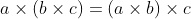
。根据这个规则，我们可以明确地合成这个群里的三个或更多元素。存在单位元。这个群里存在这样一个元素，当其他任意元素与它合成时，其他元素都保持不变。如果我们称这个特殊元素为 1，那么对这个群中的任意元素 都有
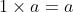
。每个元素都有一个逆元。如果 是这个群中的任意元素，那么我们可以找到一个元素 ，满足
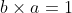
。这个元素 叫作元素 的逆元，通常记为 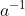
。这种使用集合论的语言（“元素”和“合成”）、借助公理来定义群的高度抽象的方法，就是我在前面提到的典型的 20 世纪公理化方法。伽罗瓦当然不会使用这种方法，他是用置换群的特殊性质来表述他的想法的。
一个群中的元素的个数被称为这个群的阶。我们很容易验证第 10 章中的那两个 6 阶群满足群公理，但不那么容易验证不存在其他的 6 阶群。当然，我在这里指的是抽象群，还有很多 6 个事物组成的其他实例，它们满足群的条件（我马上就会构造一个），但是它们的合成法则一定符合第 10 章的两个凯莱表中的某一个。这两个乘法表给出了 6 阶群的所有可能，没有其他可能，即只有两个 6 阶抽象群，尽管每一个群都有很多实例。凯莱在他 1854 年的论文中列出了阶小于等于 6 的所有群。当然，今天我们还知道更多的群。图 11-1 给出了  阶抽象群（
阶抽象群（
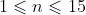
）的个数。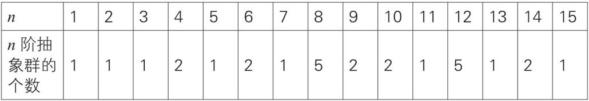
图 11-1 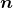 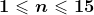
我们怎样才能得到任意给定阶为 的群的个数呢？这个问题没有一般的方法或公式。然而，还有一些事实需要注意。例如，如果 是一个素数，那么阶为 的群似乎不会超过一个。没错，对于任意素数  ，唯一的 阶群就是
，唯一的 阶群就是
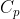
，这个群就是 次单位根在普通乘法下构成的 阶循环群。
下面是两个 4 阶抽象群（图 11-2），它们都是凯莱发现的。我将用符号  、
、 、
、 表示其中的元素（单位元记为 1）。
表示其中的元素（单位元记为 1）。
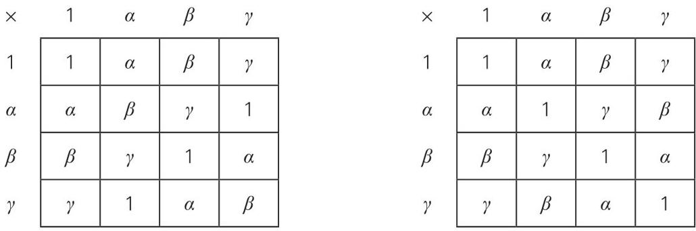
图 11-2 两个 4 阶抽象群， 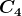 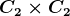
这两个群都有名字。左边的群的名字是
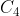
，它是 4 阶循环群，实例是四次单位根构成的群，当令、、 分别等于 i、-1 和 -i 时，我们就可以看到这一点。右边的群的名字是 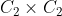
，或者克莱因四元群。它们都是交换群 2。2不知怎么地，我忘记说明今天交换群被称为阿贝尔群，以纪念阿贝尔的一个定理。有一个老掉牙的数学笑话：“问：什么东西是紫色的并且是可以交换的？答：阿贝尔葡萄。”在处理阿贝尔群时，群运算用加法而不是使用通常的乘法来表示。因此，阿贝尔群的单位元通常用 0 表示（因为
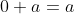
对所有 都成立），而元素 的逆写成 。为简单起见，我将在下文中忽略这些。
观察左边的群 ，如果我告诉你阶为 3、5 和 7 的群分别是
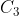
、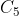
和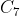
，那么你应该能很容易地写出它们的乘法表。唯一的 2 阶群就是图 FT-3 中展示的群。阶为 1 的群当然很平凡，我们把它包含进来只是为完整起见。现在，你知道了所有阶不超过 7 的群，也就是说，你知道的比凯莱还多。※※※
伽罗瓦伟大的洞察力还体现在对抽象群的结构的研究上。观察图 11-2 中右边的群，它是克莱因四元群。其中的两个元素 1 和 在这个群中构成一个小群，即一个 2 阶子群。同样地，1 和 、1 和 也分别构成子群。如果观察图 11-2 左边的群（），你就会看到 1 和 构成这个群的一个子群，但是 1 和 或者 1 和 都不能构成子群。这就是我说的结构的含义。这些群中群，即子群，在群论中起着关键作用。
我们回顾一下群
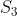
的“乘法表”。这个群是三个对象的置换群（图 10-1），它包含一些子群。其中一个 3 阶子群是由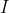
、(123) 和 (132) 构成的（请注意，它们都是偶置换）。它还有 3 个 2 阶子群：一个子群是由 和 (23) 构成的，另一个子群是由 和 (13) 构成的，还有一个子群是由 和 (12) 构成的。每一个子群都组成了一个独立的单元，你可以在其中随意做乘法或取逆，所得结果永远不会跑到这个子群以外。被称为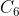
的第二个 6 阶子群（图 10-2）中有一个 3 阶子群，它是由 1 的立方根（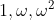
）构成的， 中还有一个 2 阶子群，它是由 1 的平方根（1, -1）构成的。我已经在第 7 章中提过，关于群结构的第一个伟大定理是拉格朗日定理：子群的阶整除这个群的阶。整除的商被称为这个子群的指数。根据拉格朗日定理，分数指数不会出现。我们可以在 6 阶群中找到阶为 2 或 3（指数分别为 3 或 2）的子群，但是我们永远不可能在其中找到阶为 4 或 5 的子群，因为 6 不能被 4 或 5 整除。
伽罗瓦为群结构引入了一个关键概念，也就是我们今天所说的正规子群的概念。下面我将对此进行简短的描述，以群 和由 和 (12) 构成的子群为例，我们把这个子群记为
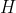
，它是唯一的 2 阶抽象群的实例，如第 230 页图 FT-3 所示。从群 中选取一个元素，这个元素属于或者不属于这个子群，这无关紧要。我选择 (123)，将这个元素依次与 和 (12) 相乘，从左到右做乘法运算，先做置换 (123)，然后再做另一个置换，如第 10 章所述。最终我们得到一个集合，而不是一个子群，这个集合是由 (123) 和 (23) 组成的。这个集合叫作 的一个“左陪集”。对群 中的其他每一个元素重复刚刚用 (123) 执行的操作，就会得到一个由左陪集组成的集合（也称左陪集族），其中一个元素就是刚刚给出的左陪集 {(123), (23)}。（注意：大括号是表示集合的常用方式。伦敦、巴黎和罗马组成的集合用数学符号表示为 { 伦敦，巴黎，罗马 }。）此外，左陪集中有一个元素是 {(132), (13)}，还有一个元素是
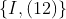
，也就是 自身。（由于 的阶是 6，因此你可能以为有 6 个左陪集，但实际上它们两两相同。）重复整个过程，但是这次的乘法运算顺序是“从右边开始”，这给出一个“右陪集”族：它由 {(123), (13)}、{(132), (23)} 和 组成。现在，如果左陪集族与右陪集族相同，那么我们称 是一个正规子群。但是，在我给出的例子中，这两个集族是不同的，所以这个特殊的 不是 的一个正规子群，它只是一个普通的子群。然而，由所有偶置换组成的 的 3 阶子群是一个正规子群。你可以自己验证一下。根据上面的定义，我们要注意以下事实：如果一个群是交换的，那么每一个子群都是正规子群。
伽罗瓦证明了，对于任意一元 次多项式方程

通过研究系数域与解域之间的关系，我们都可以将该方程同一个群联系起来。如果这个方程的伽罗瓦群具有满足特定条件的结构，其中正规子群的概念最为重要，那么我们就能够仅用加法、减法、乘法、除法和开方来表示这个方程的解。如果这个方程的伽罗瓦群不具有这样的结构，那么我们就不能通过加法、减法、乘法、除法和开方来表示这个方程的解。如果 小于 5，那么方程的伽罗瓦群总具有相应的结构；如果 大于等于 5，那么它可能具有也可能不具有这样的结构，这主要取决于 、 及其他系数。伽罗瓦揭示了群结构的条件，从而对“何时可以找到多项式方程的解的代数公式”这个问题给出了最终的明确答案。
及其他系数。伽罗瓦揭示了群结构的条件，从而对“何时可以找到多项式方程的解的代数公式”这个问题给出了最终的明确答案。
※※※
虽然伽罗瓦的工作标志着方程的故事的结束，但是它也标志着群的故事的开始。这就是本书对待伽罗瓦理论的态度：它是开始，而不是结束。
我在本章中提到，刘维尔于 1846 年发表了伽罗瓦的论文。那时如同现在一样，伽罗瓦理论可以被看作一个结束，也可以被看作一个开始。那些注意到伽罗瓦工作的数学家似乎主要采纳了“结束”的观点。关于求解多项式方程的一系列问题可以追溯到几个世纪以前，现在它们已经被彻底解决了。很好！现在让我们继续投身于更有前途的新的数学领域：函数论、非欧几里得几何、四元数，等等。
做出面向未来的第一个真正意义上的转变的人是一位挪威数学家，他就是路德维希·西罗（1832—1918），他于 1832 年出生于奥斯陆（当时仍叫克里斯蒂安尼亚），是阿贝尔的同胞，这一年伽罗瓦去世。
由于挪威数学家的人数远远多于当地的需求，因此西罗的职业生涯主要是在哈尔登市当一名高中教师，哈尔登市位于奥斯陆以南 50 英里，当时叫作腓特烈萨尔特。直到 60 多岁时，西罗才得到大学职位。在高中教书的那些年间，他一直坚持研究数学和通信。
西罗很自然地被阿贝尔关于方程可解性的工作吸引。大约在 19 世纪 50 年代末，克里斯蒂安尼亚大学的一名教授给西罗看了伽罗瓦的论文，此后他开始研究置换群。尽管凯莱已经在 1854 年发表了论文，但不要忘了，彼时抽象群论仍然不是数学家关注的部分。群论还只是一个关于置换的理论，其仅有的有成效的应用是对代数方程解的研究。
1861 年，西罗获得了去游学一年的政府奖学金。他访问了法国巴黎和德国柏林，参加了当时几位数学名人的讲座，其中包括 15 年前拯救并发表了伽罗瓦论文的刘维尔。在返回奥斯陆之后，西罗开设了关于置换群的课程。这是 19 世纪 70 年代以前少有的关于群论的课程之一 3，这门课程非常有趣。我还会在第 13 章中提到这门课。
319 世纪 50 年代后期，理查德·戴德金在哥廷根大学开设了一些关于伽罗瓦理论的讲座。
西罗的研究涉及置换群的结构。我之前提到了拉格朗日定理，这个定理给出了 是 的子群的一个必要条件： 的阶必须整除 的阶。因此，6 阶群可能有阶为 2 或 3 的子群，但不可能有阶为 4 和 5 的子群。
西罗的研究集中在“可能”这个词上。好吧，6 阶群可能有阶为 2 或 3 的子群，但是它真的有这样的子群吗？我们能得到比拉格朗日的关于子群的必要非充分的简单的整除条件更好的法则吗？柯西已经证明，如果一个群的阶有素因子 ，那么这个群就有一个 阶子群。这个结果还能改进吗？
当然能。在发表于 1872 年的一篇论文中，西罗针对这个论题给出三个定理。直到今天，这三个定理仍然作为群论的基本结果被传授给学代数的学生。我在这里只给出第一个定理。
西罗第一定理：假设 是一个
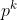
是整除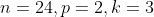
），那么 有一个 阶子群。
这种阶为 的子群被称为 的西罗 子群。世界上某个大学的数学系曾经有一支摇滚乐队，自称为“西罗和他的 子群”。
※※※
随后，有限群论本身就拥有了一段漫长而迷人的历史。它还在从市场研究到宇宙学等许多实际领域中得到广泛的应用。完整的群分类也得到了发展，它把不同阶的群分类成不同的族。
我在第 10 章给出的“乘法表”中的两个群就是其中两个族的例子。第一个族是 ，它是由 3 个对象的所有可能置换构成的群，其阶为 6；另一个族是 ，它是由六次单位根构成的群，它的阶也是 6。这两个族都是群族中的元素。在通常的置换合成下，由 个对象的所有可能置换组成的集合构成群
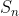
，即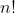
（即 的阶乘）阶对称群。 次单位根在通常的乘法下构成群 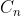
，即 阶循环群。事实上，我们已经发现了第三类重要的群族：从 中提取的所有由偶置换组成的正规子群，被称为阶为 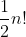
的交错群，更简单地说，“指数为 2 的交错群”，通常被记为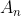
。另一类重要的族就是二面体群。“二面体”指几何意义中的“有两个面”，而不是指人的两面性。从一张硬纸板上剪下一个正方形，这个正方形有两个面，它是二面的。我们依次给正方形的四个顶点标上  、
、 、、
、、 ，把这个正方形放在一张纸上，然后用铅笔画出它的轮廓。请问，我们能够用多少种基本的简单方法（其他方法与某一种基本方法等价，例如，720°旋转等价于 360°旋转）移动这个正方形，使得它总能完美地与最初的轮廓重合？
，把这个正方形放在一张纸上，然后用铅笔画出它的轮廓。请问，我们能够用多少种基本的简单方法（其他方法与某一种基本方法等价，例如，720°旋转等价于 360°旋转）移动这个正方形，使得它总能完美地与最初的轮廓重合？
答案是 8 种方法。我在图 11-3 中绘制出了这些方法，而且给出了每种方法作用在特定的初始状态上的效果，这个初始状态用不做任何改变的恒等移动 表示。除了恒等移动以外，移动方法还有顺时针旋转 90°、180°和 270°，以及翻转轴不同的 4 种翻转方式（南北翻转、东西翻转、西南–东北翻转，东南–西北翻转，其翻转轴是这个正方形的 4 条对称轴）。
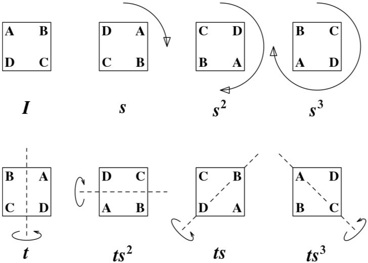
图 11-3 二面体群 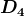
这些移动（对数学家来说就是“变换”）根据以下合成法则构成一个群：先做第一个基本移动，再接着做另一个基本移动。显然，这个群的阶是 8，它的名字是
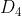
，是正方形的二面体群。你可以试着写出这个群的凯莱表。任意正 边形都对应于一个类似的群，这个群被称为 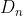
。当 时，这个“多边形”就是线段
时，这个“多边形”就是线段 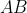
，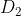
只有两个元素，但是对任意大于等于 3 的， 都有 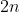
个元素。所以，这是另外一类群族。〔注意，我在标记 中的元素时使用的符号有点儿复杂。例如，当我定义 90°旋转为
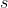
，合成法则为“先做第一个变换，再做第二个变换”时，180°旋转就是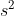
，即先做一次 ，再做一次 ，270°旋转就是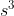
。类似地，我只需定义南北翻转为 ，那么西南–东北翻转就是
，那么西南–东北翻转就是 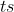
，等等。当你能够用最少的基本元素（如 和）构造一个群时，这些元素就被称为这个群的生成元。图 11-2 中的 4 阶群的生成元是什么？〕
假设对三角形做类似的操作，我们可以得到
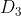
。 不就有 6 个元素吗？我不是已经说过，只有 和 两个 6 阶抽象群吗？谜底是 是 的一个实例 4。只要考虑置换，你就会明白为什么对三角形来说是这样的，而对正方形或超过三条边的任意正多边形来说就不是这样的。、、 的任意置换都对应于 中的一个二面体移动，但对于 、、、 的置换来说则不是如此。置换 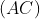
对应于移动 ，但是置换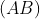
却不与 中的任意变换对应（另外，同 一样， 也有正规子群和普通子群，你可以试着把它们列出来）。4更准确地说， 和 都是同一个抽象群的实例。唯一的 2 阶抽象群的实例不仅有 和
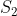
，还有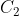
，如图 FT-3 所示。严格地说，所有诸如 、、 的记法都是抽象群的特殊实例的名称，我们应该避免使用“这个群 ”的说法，而应该说“这个以 作为最熟悉的实例的群”，但是没有人愿意这样严格地叙述。我在前面说过，如果 是一个素数，那么唯一的 阶群是循环群
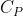
，实例是 次单位根构成的群。而如果 是一个大于 2 的素数，那么有且只有两个 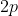
阶群，其中一个 阶群是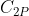
，另一个 阶群是 。我们回过头来看图 11-1，这个图给出了各阶群的个数，现在，你基本可以得出直到 的情况。美中不足的是 的情况，当 时，有 5 个不同的群，其中 3 个群是循环群或者由循环群构造而成的群：、 和 。第四个群当然是 ，第五个群是一个奇怪的四元数群，这个四元数群有一个非常奇特的性质：虽然它是非交换群，但是它的所有子群都是正规子群。
※※※
到此，我希望你能看到对群进行分类的迷人之处。在这个领域中，历史上最有趣的地方或许就是试图将所有的有限单群进行分类。单群是没有正规子群的群。例如，对于素数 ， 没有真子群，所以它当然就是单群。当 大于等于 5 时， 个对象的偶置换群 也是单群，这就是一般五次方程没有代数解的根本原因。除了另外 5 个其他单群族以外，还有 26 个“怪物”——它们是不属于任何一个族的例外单群。其中一个“怪物”的阶是 808 017 424 794 512 875 886 459 904 961 710 757 005 754 368 000 000 000。
所有有限单群的分类于 20 世纪中后期实现，并于 1980 年完成。这是近世代数的伟大成就之一。5
5我不再详述有限单群的分类问题。如果你想看到更全面而清晰的描述，请参考基思·德夫林（1947— ）1999 年的著作《数学：新的黄金时代》（Mathematics, the New Golden Age）。如果你想一睹最终的分类情况，请参考康威等人编写的、由克拉伦登出版社于 1985 年出版的《有限群图册》（The Atlas of Finite Groups），不过其表述更高深。